ECG Blog #191 — Blốc AV có hoàn toàn không?
======================================
— Xem ECG Blog #405 — để xem phần trình bày bằng Video của case này!
======================================
Dải nhịp 2 chuyển đạo trong Hình-1 được ghi từ một phụ nữ lớn tuổi đến khoa cấp cứu sau một cơn ngất. Dựa trên dải nhịp này — bà được chẩn đoán là blốc AV hoàn toàn.
- Câu hỏi #1: Có phân ly nhĩ thất (AV Dissociation) trong Hình-1 không?
- Câu hỏi #2: BẠN có đồng ý rằng nhịp trong hình này là blốc AV hoàn toàn ( = độ 3) không?
- Điểm cộng: Vì sao tôi ngờ rằng phần lớn người đọc bài này sẽ trả lời sai Câu hỏi #2?

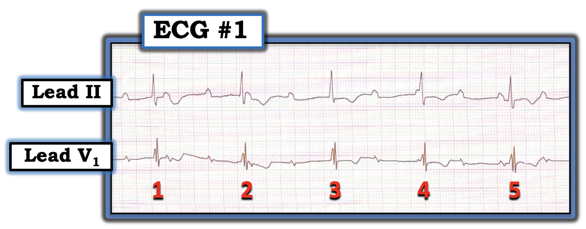
Câu trả lời của BẠN là gì?
- Câu trả lời của bạn cho Câu hỏi #1 —
- Câu trả lời của bạn cho Câu hỏi #2 —
=======================================
LƯU Ý: Tới đây, một số bạn đọc có thể muốn xem ECG Media Pearl #8 hôm nay trước khi chuyển sang phần diễn giải cuối cùng của tôi. Dù vậy — Bạn cứ thoải mái xem bất cứ lúc nào phần Suy nghĩ của tôi về Điện tâm đồ #1 (nằm ngay bên dưới ECG MP-8).
=======================================

Hôm nay, ECG Media PEARL #8 (Video 7:00 phút) — là một video điện tâm đồ ôn lại sự khác biệt giữa phân ly nhĩ thất và blốc AV hoàn toàn — đồng thời minh họa sự khác biệt này trong khi giải thích cách diễn giải nhịp ở Hình-1.
- LƯU Ý: Xem thêm ECG Blog #192 — bài nhấn mạnh 3 Nguyên nhân gây phân ly nhĩ thất.
=======================================
Suy nghĩ CỦA TÔI về nhịp ở Hình-1:
Lưu ý rằng ECG Media PEARL #8 ở trên đã ôn lại chi tiết cách diễn giải nhịp ở Hình-1. Để rõ ràng — tôi trình bày lại bên dưới một số hình MẤU CHỐT được chọn từ video này.
- Chúng ta chỉ thấy tổng cộng 5 nhát trong Hình-1. Nhịp thất đều, tần số ngay dưới 50/phút. Khó đánh giá thời gian QRS chỉ từ 2 chuyển đạo này — nhưng có vẻ QRS có thể hơi giãn rộng (ít nhất thì chúng ta thấy một phức bộ QRS nhiều pha ở chuyển đạo V1).
- Nhịp nhĩ khá đều, tần số ~100-110/phút (các mũi tên ĐỎ đánh dấu những sóng P mà chúng ta chắc chắn). Dùng compa đo (calipers) cho thấy cần chờ đợi một sóng P khác tại vị trí mũi tên HỒNG (Hình-2). Vậy, với hình ảnh đều đặn nói chung của 10 sóng P còn lại trong bản ghi này (các mũi tên ĐỎ) — chúng ta gần như có thể chắc chắn rằng sóng P vẫn tiếp tục đều, dù 1 sóng P bị che khuất do xuất hiện trùng lúc với phức bộ QRS của nhát #3.

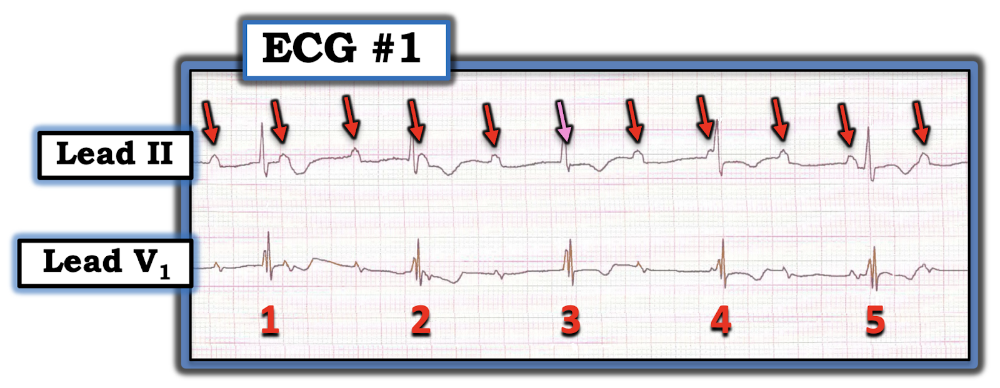
Suy nghĩ CỦA TÔI về nhịp (Tiếp theo):
Theo Cách tiếp cận Ps, Qs & 3R có hệ thống để diễn giải nhịp (mà chúng ta đã bàn chi tiết trong ECG Blog #185) — thông số còn lại chưa được đánh giá trong Hình-2 là chữ “R” thứ 3 = Sóng P có Related – liên quan (tức là “gắn bó” ) với các phức bộ QRS kế cận không?
- Cách dễ nhất để đánh giá sóng P có liên quan với các phức bộ QRS kế cận hay không — là nhìn vào phía trước mỗi phức bộ QRS — và xem khoảng PR giữ nguyên hay thay đổi liên tục.
- Trong Hình-2 — hẳn là dễ thấy khoảng PR trước mỗi phức bộ trong 5 phức bộ QRS không bao giờ giống nhau.
- ĐIỂM THEN CHỐT (PEARL) #1: Xin nhấn mạnh — dù khoảng PR đứng trước nhát #1 và nhát #2 trông giống nhau — dùng compa đo cho thấy ngay khoảng PR đứng trước nhát #2 dài hơn. Compa đo cũng cho thấy ngay khoảng PR đứng trước nhát #3 dài hơn khoảng PR đứng trước nhát #2. Như vậy, các khoảng PR trong Hình-2 thay đổi liên tục.
Tổng hợp lại: Trong Hình-2 — có phức bộ QRS hơi giãn rộng với nhịp thất đều (tần số ngay dưới 50/phút) — nhịp nhĩ khá đều (tần số ~100-110/phút) — và — khoảng PR trước mỗi phức bộ trong 5 phức bộ QRS thay đổi liên tục!
- Do đó — có phân ly nhĩ thất hoàn toàn trong dải nhịp 5 nhát (thời gian 6.4 giây) ở Hình-2 — vì không sóng P nào được dẫn truyền xuống thất.
- ĐIỂM THEN CHỐT (PEARL) #2: Dù có phân ly nhĩ thất hoàn toàn trong dải nhịp 5 nhát này ở Hình-2 — chúng ta chưa chứng minh được là có blốc AV hoàn toàn. Điều mà nhiều bác sĩ lâm sàng thường bỏ qua là tiêu chuẩn hết sức quan trọng để chẩn đoán blốc AV hoàn toàn: dải nhịp phải đủ dài — và — nhịp phải đủ chậm để sóng P xuất hiện ở mọi pha của chu chuyển tim mà vẫn không dẫn truyền được. Tức là, trước khi có thể chứng minh blốc AV hoàn toàn — bạn phải cho thấy sóng P đã có đủ cơ hội để dẫn truyền (bằng cách xuất hiện ở mọi phần của khoảng R-R) — mà vẫn không dẫn truyền được. Tiếc là dải nhịp 6.4 giây ở Hình-2 lại quá ngắn để bảo đảm rằng đã có đủ cơ hội cho điều này xảy ra.
- Về diễn giải nhịp này — dù chúng ta chưa chứng minh được có blốc AV hoàn toàn — ít nhất dường như có blốc AV độ 2 đáng kể — vì bình thường chúng ta sẽ chờ đợi các sóng P nằm gần giữa mỗi khoảng R-R được dẫn truyền, vậy mà không có bằng chứng nào của dẫn truyền (tức là không có phức bộ QRS nào theo sát sau bất kỳ sóng P nào trong số này).
Case tiếp diễn: Trong Hình-3 — nay cho thấy thêm 4 nhát kế tiếp sau nhát #5.
- BẠN có còn nghĩ là có blốc AV hoàn toàn không?

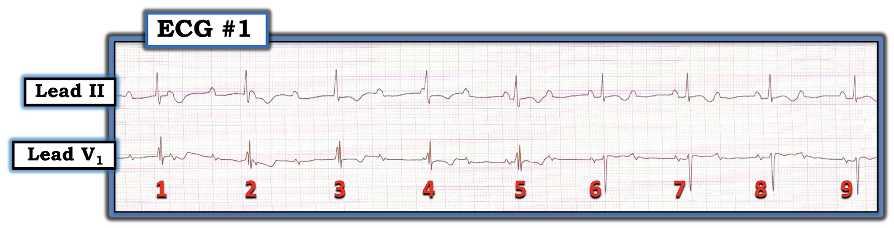
BẠN nghĩ sao?
- Trong Hình-3 — Còn phân ly nhĩ thất hoàn toàn nữa không?
Suy nghĩ CỦA TÔI về Hình-3:
Có một số thay đổi rõ ràng trong Hình-3, khi giờ chúng ta đã thấy thêm 4 nhát kế tiếp trong bản ghi.
- Lưu ý rằng phức bộ QRS hẹp lại và thay đổi hình dạng ở 4 nhát cuối trong Hình-3.
- Sóng P đều tiếp tục có mặt suốt toàn bộ bản ghi. Thế nhưng, khác với những gì chúng ta thấy ở bản ghi ngắn hơn (5 nhát) trong Hình-2 — khoảng PR đứng trước các nhát #6, 7, 8 và 9 trong Hình-3 giờ có vẻ hằng định! Điều này cho chúng ta biết các nhát #6, 7, 8 và 9 được dẫn truyền từ xoang — xác nhận rằng nhịp ở Hình-2 không phải là blốc AV hoàn toàn, vì khi sóng P cuối cùng có cơ hội dẫn truyền, chúng đã dẫn truyền!
- 4 nhát cuối này trong dải nhịp cũng xác nhận khiếm khuyết dẫn truyền là một dạng blốc AV độ 2, với dẫn truyền AV 2:1.
ĐIỂM THEN CHỐT (PEARL) #3: Trong ECG Media Pearl #8 ở trên, tôi đã nhấn mạnh — sự khác biệt giữa blốc AV hoàn toàn và phân ly nhĩ thất không kèm blốc AV hoàn toàn. MẤU CHỐT để phân biệt là tìm bằng chứng của dẫn truyền.
- Việc khoảng PR đứng trước các nhát #6, 7, 8 và 9 vẫn giữ nguyên cho chúng ta biết các nhát này đúng là được dẫn truyền từ xoang!
- Dẫn truyền từ xoang còn được củng cố thêm bởi sự hẹp lại của phức bộ QRS (kèm thay đổi hình dạng QRS) ở 4 nhát cuối này trong Hình-3.
- LƯU Ý: Phần lớn trường hợp blốc AV hoàn toàn — nhịp thất sẽ đều. Đó là vì nhịp thoát nói chung là đều. Dù cực kỳ tinh tế ở Hình-3 (Bạn sẽ cần compa đo để kiểm chứng!) — khoảng R-R đứng trước nhát #6 ngắn hơn chỉ một chút xíu so với khoảng R-R đứng trước mỗi nhát trong 5 nhát trước đó của bản ghi này. Nhận ra trong một bản ghi có phân ly nhĩ thất rằng một nhát xuất hiện sớm hơn dự kiến là một manh mối tuyệt vời cho thấy lý do nhát đó đến sớm hơn một chút chính là vì nó đang được dẫn truyền!
ĐIỂM THEN CHỐT (PEARL) #4: Để làm rõ sự khác biệt giữa phân ly nhĩ thất và blốc AV hoàn toàn — tôi đã thêm một PHẦN BỔ SUNG vào bài này, trong đó tôi trình bày lại đoạn trích 7 trang từ cuốn sách ACLS-2013 Arrhythmias (Expanded Version) của tôi. Trong số các điểm MẤU CHỐT "cần nhớ" từ đoạn trích này có những điểm sau:
- Thuật ngữ “phân ly nhĩ thất” — đơn giản có nghĩa là trong một khoảng thời gian nhất định, sóng P xoang không liên quan với các phức bộ QRS kế cận. Tức là, các sóng P đứng trước QRS không được dẫn truyền xuống thất.
- Phân ly nhĩ thất có thể ngắn ngủi, chỉ xảy ra trong 1 hoặc 2 nhát — hoặc có thể kéo dài dai dẳng như trong blốc AV hoàn toàn.
- Phân ly nhĩ thất không bao giờ là một “chẩn đoán”. Thay vào đó — nó là một tình trạng do “một điều gì khác” gây ra. Nhiệm vụ của bác sĩ lâm sàng là tìm ra nguyên nhân gây phân ly nhĩ thất ở mỗi nhịp cụ thể. Có 3 nguyên nhân có thể: i) Blốc AV tự thân (blốc AV độ 2 hoặc độ 3); ii) Chiếm quyền (usurpation) — trong đó sóng P tạm thời không dẫn truyền vì một nhịp bộ nối hoặc nhịp thất gia tốc giành lấy chức năng tạo nhịp (tức là “chiếm quyền” điều khiển nhịp); và/hoặc, iii) Mặc định (default) — trong đó một nhịp thoát bộ nối hoặc nhịp thoát thất giành quyền điều khiển theo “mặc định”, vì tần số của ổ tạo nhịp xoang đã chậm lại vì bất kỳ lý do nào.
Minh họa bằng giản đồ bậc thang (laddergram):
Để minh họa rõ hơn cơ chế của nhịp 9 nhát mà chúng ta thấy ở Hình-3 — tôi đã vẽ một giản đồ bậc thang (Hình-4):
- Nhịp nhĩ khá đều được thấy suốt bản ghi (các mũi tên ĐỎ).
- Có phân ly nhĩ thất hoàn toàn ở 5 nhát đầu của bản ghi — vì không sóng P nào trong phần đầu này của nhịp được dẫn truyền xuống thất.
- Khó chắc chắn nhịp thoát trong 5 nhát đầu này phát sinh từ đâu trong thất (tức là có thể từ cơ thất, hoặc từ một trong các phân nhánh hay các nhánh bó His) — nhưng gần như chắc chắn nhịp thoát phát sinh từ dưới nút AV.
- Sóng P đứng trước nhát #6 có được dẫn truyền! Lưu ý rằng khoảng PR đứng trước các nhát #7, 8 và 9 giống hệt khoảng PR đứng trước nhát #6, vì cả 4 nhát này đều được dẫn truyền.
- Có blốc AV độ 2, với dẫn truyền AV 2:1 ở 4 nhát cuối này của bản ghi.
- Lý do gây phân ly nhĩ thất trong Hình-4 ở phần đầu bản ghi là blốc AV độ 2. Không thể chắc chắn từ một dải nhịp đơn lẻ này đây là blốc AV độ 2 Mobitz I hay Mobitz II — vì chúng ta không bao giờ thấy 2 sóng P được dẫn truyền liên tiếp (nên chúng ta không biết khoảng PR có dài dần ra hay không NẾU có cơ hội để làm vậy).
- Vượt ra ngoài phần cốt lõi: Chúng ta cũng không thể biết nhịp này có phải hay không phải là một dạng blốc AV độ 2 “mức độ cao” — vì chúng ta không bao giờ thấy 2 sóng P liên tiếp lẽ ra phải dẫn truyền nhưng lại không dẫn truyền trong phần đầu của dải nhịp này, là phần có phân ly nhĩ thất hoàn toàn.
- T.B. (P.S.): Bạn nào muốn ôn lại cách đọc (và/hoặc vẽ) giản đồ bậc thang — Mời XEM ECG Blog #188 của tôi.

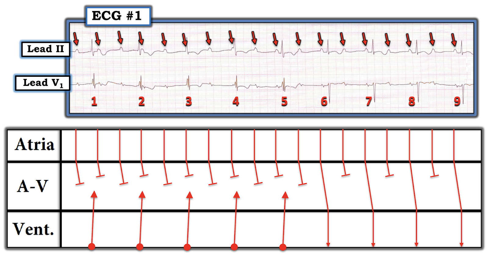

PHẦN BỔ SUNG:
- Dưới đây là đoạn trích 7 trang từ cuốn sách ACLS-2013 Arrhythmias (Expanded Version) của tôi, trong đó tôi ôn lại sự phân biệt giữa phân ly nhĩ thất và blốc AV hoàn toàn.


=======================================
LƯU Ý: Dưới đây là các Hình sơ đồ từ Phần bổ sung ở trên. Các hình này giúp ôn nhanh tức thời các khái niệm MẤU CHỐT về các loại blốc AV và phân ly nhĩ thất — nếu bạn cần "dạy" (hoặc ôn lại) chủ đề này trong thời gian tối thiểu.
=======================================

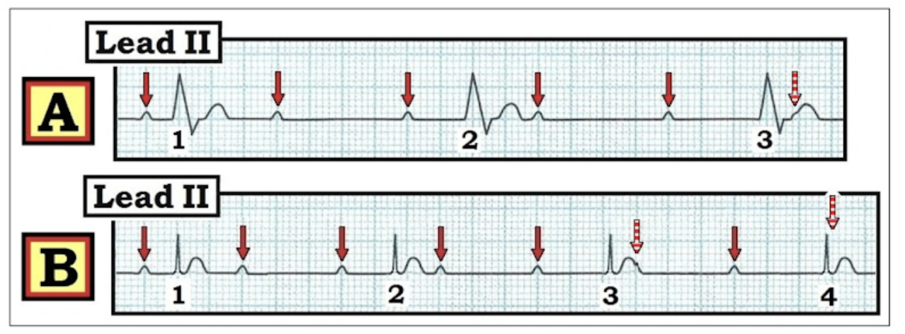

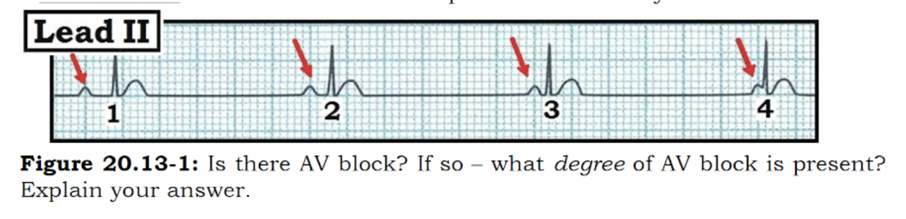

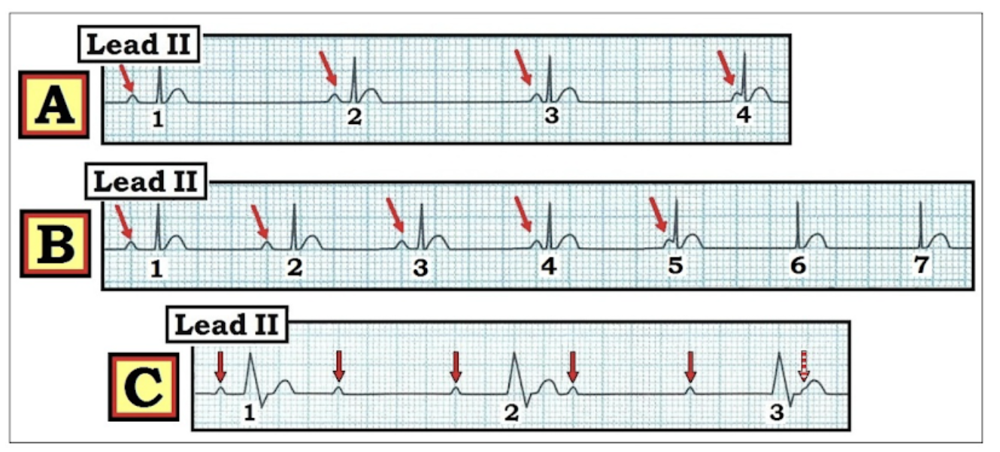

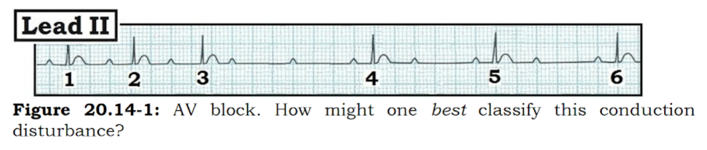

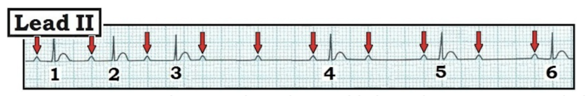
=======================================
LƯU Ý: Tôi thêm bên dưới chú thích cho các Hình ôn tập ở trên.
=======================================

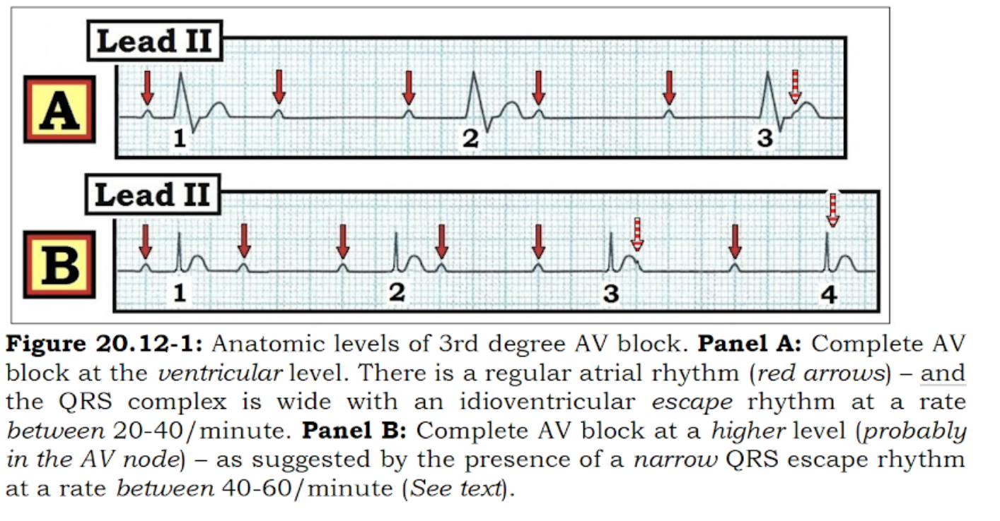

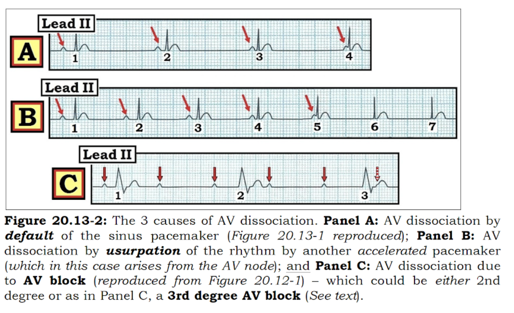

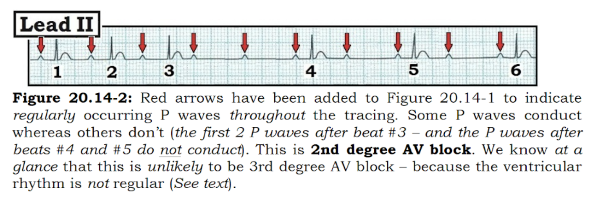